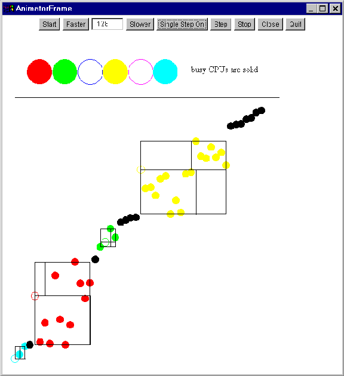
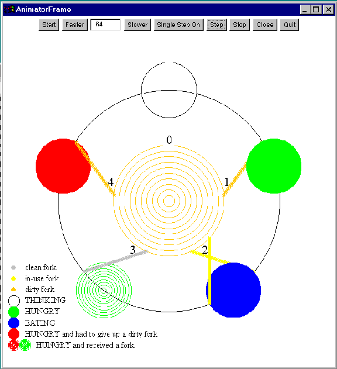

Sometimes the phrase ``send a message to an object'' is used to describe a thread in one object calling a method in another object. Here, that phrase is used to describe a thread in one object sending a message to a thread in another object, where the message is itself an object.
This technique is used for thread communication and synchronization in a computing environment where the threads do not have shared memory (since the threads reside in different virtual or physical machines). Hence the threads cannot share semaphores or monitors and cannot use shared variables to communicate. Message passing can still be used, of course, in a shared memory platform.
Messages are sent through a port or channel with an operation like send(channel, message) and received from a port or channel with an operation like receive(channel, message). Messages can be passed synchronously, meaning the sender blocks until the received does a receive and the receiver blocks until the sender does a send. Since the sender and receiver are at specific known points in their code at a known specific instant of time, synchronous message passing is also called a simple rendezvous with a one-way flow of information from the sender to the receiver.
In asynchronous message passing, the sender does not block. If there is not a receiver waiting to receive the message, the message is queued or buffered. The receiver still blocks if there is no queued or buffered message when a receive is executed.
In conditional message passing, the message remains queued until some condition, specified by the receiver, becomes true. At that time, the message is passed to the receiver, unblocking it.
A two-way flow of information, perhaps over the network, is called an extended rendezvous and can be implemented with a pair of sends and receives. Typically a client thread uses this technique to communicate with a server thread and request a service to be performed on its behalf. A similar situation is a worker thread contacting a master thread, asking for more work to do.
server or master: receive request; perform service; send reply
Messages are objects and can be
or serialized through a pipe within the same JVM,
or serialized through a socket between JVMs that are on the same physical machine or on different physical machines.
The base data types, int, double, etc., can be sent as messages in binary or raw data format through a pipe or socket using the DataInputStream and DataOutputStream methods. They can also be sent as objects using the wrapper classes Integer, Double, etc.
Here is a collection of Java message passing classes. All of the message passing channel classes implement the methods in the MessagePassing interface or the ConditionalMessagePassing interface. This exception is thrown when an error occurs. This exception is used in implementing restricted rights channels (below). All classes except the conditional ones extend this base class.
Asynchronous Channel. A Vector is used to queue sent but not yet received messages.
Asynchronous Conditional Channel. The receiver must pass an object that implements the Condition interface, that is the object must contain a checkCondition() method that is used to determine which messages sent are eligible to be received.
Synchronous Conditional Channel.
Capacity Controlled Asynchronous Channel.
Receive-Only Rights Channel. Send-Only Rights Channel. These two filter classes can be wrapped around a message passing channel to permit only sending or receiving on the channel. This is done by overriding the restricted method with one that throws NotImplementedMethodException.
Integers and Floating-Point Numbers as Messages in a Pipe or Socket Channel. The numbers are passed as binary or raw data types through a pipe within the same JVM or a socket between different JVMs.
Serialized Objects as Messages in a Pipe or Socket Channel. The objects are serialized and deserialized using the writeObject() and readObject() methods through a pipe within the same JVM or a socket between different JVMs.
This is a simple example illustrating both synchronous and asynchronous message passing.
We can implement the bounded buffer producer and consumer with a set of empty messages representing the buffer slots.
This is a testing program for asynchronous, synchronous, finite buffer, and piped message passing within the same JVM. There are two types of threads in this collection of threads: those that produce work and those that perform or consume the produced work. A producer puts the work to be done into a message passing channel that is called a bag of tasks because consumers reach into the bag to extract the next piece of work to do. If there is just a single thread producing work with many threads reaching into the bag, then this technique is called master/worker or worker crew.
Threads can use semaphores and monitors to handle mutual exclusion and condition synchronization. Suppose though the threads do not share memory but are in nodes that have private memories and CPUs on a LAN and suppose they still want to do condition synchronization to coordinate access to some shared resource. If all we have is message passing, can we implement some sort of distributed mutual exclusion algorithm? Suppose we also want to avoid a central server to avoid a bottleneck. We want to solve the N node mutual exclusion problem such that it
Basic Idea:
while (true) {
outsideCS();
chooseNumber();
sendItToAllOtherNodes();
waitForMessageFromAllOtherNodes();
insideCS();
postProtocol();
}
A node sends a ``reply'' or acknowledgement message to a node that has sent a request message, i.e., when ``asked'':
In the absence of shared memory, a collection of Java threads can use this technique to implement mutual exclusion. The threads send messages to all other threads, asking for permission to enter their critical sections. The threads are all in the same JVM, but we say memory is not shared here because the threads do not share any variables, semaphores, or monitors.
The quick sort algorithm can be parallelized for a shared memory multiple CPU machine by dedicating each CPU to a worker thread and using a message passing channel as a bag of tasks. The main() method puts the whole array to be sorted into the bag. A worker extracts the task, chooses a pivot point, and partitions the array. Each of the two partitions is then put back into the bag for one of the workers to perform. Even though message passing is being used for a bag of tasks, shared memory is still required because the array is being sorted ``in place'' and the work requests being put into the bag are array index pairs and not pieces of the array itself.
AsyncMessagePassing task = new AsyncMessagePassing();
quicksort threads get work:
while (true) {
m = (Task) receive(task);
quickSort(id, m.left, m.right);
}
quicksort threads create work:
if (right-(l+1) > 0) send(task, new Task(l+1, right)); if ((l-1)-left > 0) send(task, new Task(left, l-1));
Animated Worker Crew Quick Sort.

These consumers are picky and only conditionally accept messages that are smaller than some limit. This program tests both synchronous and asynchronous conditional message passing.
The distributed dining philosophers do not have a central server they can query for fork availability. Instead each philosopher has a servant who communicates with the two neighboring servants to negotiate the use of the forks. The servants pass needL, needR, passL, and passR messages back and forth. Each fork is always in the possession of some philosopher, one of the two on either side of the fork. When a philosopher finishes eating, it labels its two forks as dirty. A hungry philosopher's servant is required to give up a dirty fork in its possession, if asked for by its hungry neighbor's servant. This prevents starvation. Study carefully how conditional message passing is used. Does it matter if synchronous were used instead?
Here is a screen snapshot of an animated version.

An extended rendezvous is also called a remote procedure call from a client to a server (or a worker to the master) because it resembles (and syntactic sugar can make it nearly identical to) a call to a procedure on a remote machine that is executed there. Typically the call represents a request for service, such as reading a file that resides on the remote machine. The server may handle the request in its main thread or the server may spawn a new thread to handle the request while the server's main thread handles additional requests for service from other clients. The latter gives greater throughput and efficiency since a lengthy request would otherwise delay the handling of requests from the other clients.
An addressing mechanism is needed so the client can contact an appropriate server. In the local case (everything in the same JVM), an object can be used as the place for the client and server to ``meet'' and establish a rendezvous. The server calls a method in the object and blocks until the client calls a method. At this point in time, both methods return a newly created object that the client and server subsequently use for the two-way flow of information. This object contains a message passing channel shared by them. In the remote case, the client uses the server's machine name and a TCP/IP port number to address the server; the server ''listens'' on the TCP/IP port.
The extended rendezvous class implements this interface.
An object created from this class is used for the addressing described above. In the local case, one such object is used by both client and server. In the remote case, a client creates such an object using the server's machine name and port number in the object's constructor; the server uses just the port number.
When the rendezvous occurs, and object constructed from this class is returned to both the client and server. In the local case (within the same JVM), the client and server share this object and use it to transact (synchronous message passing of object references). In the remote case (between JVMs that might be on different physical machines), each gets its own object and the object contains a socket to the other JVM (and machine). Objects are serialized through the socket. The case of sending raw data types through a pipe (same JVM) or a socket (different JVMs) is not implemented and is an exercise for the reader.
This is a local case example. A command line option controls whether or not the server spawns off a new thread to handle the request. The clients and server all share a EstablishRendezvous object for addressing. Each time a client wants to rendezvous with the server, it calls the clientToServer() method to get an ExtendedRendezvous object whose clientMakeRequestAwaitReply() method is used to transact with the server. The client passes a reference to a RendezvousRequestReply object to the server. The object contains the data and a method for the server to call. The ExtendedRendezvous object is only used once by the client; however, it could be reused for multiple clientMakeRequestAwaitReply() calls as is done in the next example.
This is a remote case example. Suppose there are workstations named client0, client1, client2, client3, and client4 connected together on a local area network, along with a machine named server. The example compile and run shows for UNIX how to run each philosopher is in its own JVM on a different physical machine. Each philosopher sends an Integer object containing its ID value to the server when it is hungry. Since this is a rendezvous, the philosopher is blocked until it gets a reply indicating that its forks are available. The server spawns a new thread for each philosopher to handle the transactions. Each philosopher sends an Integer object containing its -ID-1 value when putting its forks down. Each philosopher has its own ExtendedRendezvous object whose clientMakeRequestAwaitReply() it calls over and over again (in contrast to the previous example, in which the clients obtained a new ExtendedRendezvous object for each transaction with the server).
This program attempts to measure the amount of time it takes to transact a rendezvous. A client sends a message containing an array of length N to the server. The server adds one to each entry of the array and sends it back. The client does this M times and calculates the number of bytes sent per millisecond. The program can be run in two ways. The local run passes the message as a reference from the client to the server within the same JVM. The remote run serializes the message containing the array through a socket over the network to the server running in a different JVM, possibly on another physical machine.
Synchronous conditional message passing corresponds to a conditional simple rendezvous, that is, once the condition is met there is a one-way flow of information in the form of a message object from the client to the server. This class implements an extended guarded or conditional rendezvous in which there is a two-way flow of information once a server finds a client message meeting the condition. This class is a combination of EstablishRendezvous and ExtendedRendezvous with the condition added. The client calls the clientTransactServer() method of the ConditionalRendezvous object, while the server first calls serverGetClient() to get a client meeting the condition and then the server uses the Rendezvous object returned to interact with the client (serverGetRequest() and serverMakeReply()). The condition class has been enhanced with more information passed to the checkCondition() method so the condition check can be based on information gathered about all outstanding messages.
An example using a condition that depends only on the message passed and not on other messages is the dining philosophers classical problem. As an exercise, add code to prevent starvation. As another exercise, implement the bounded buffer multiple producers and consumers with a conditional rendezvous. Then implement the starvation-free database readers and writers with a conditional rendezvous.
Multiple calls by servers to the serverGetClient() method can be outstanding, that is blocked, waiting for a client message meeting the condition. A server can call serverGetClient() and before completing the rendezvous with that client, the server can call it again, so a server can be handling several rendezvous with different clients simultaneously. This is illustrated with the following banking example. If starvationFree is false, a large withdrawal can sit in the queue, while later smaller withdrawals succeed. In contrast, if starvationFree is true, then the server (bank thread) accepts only deposits and no withdrawals until the bank balance is large enough to accept the waiting large withdrawal. The -a option sets the requirement that all deposits are processed before any withdrawals. The condition checking now depends not only on the message passed but also on the other messages in the queue. The -B option adds additional banks, which is not realistic, but was done to test simultaneously executing servers.
Sun Microsystems has added a remote method invocation capability to Java, the ability to make remote procedure calls. The latter term we used above to describe an extended rendezvous between two threads in different JVMs, perhaps on different physical machines. Sun's RMI allows a thread in one JVM to invoke (call) a method in an object in another JVM that is perhaps on a different physical machine. A new thread is created in the other (remote) JVM to execute the called method. The following example shows how to use it. The ComputeServer remote object implements a Compute interface containing a compute() method that a local Client can call, passing a Work object whose doWork() method the server calls. The client is using the remote server to have work performed on its behalf (adding vectors). Presumably the server is running on a computer architecture that can perform the work more efficiently. Parameters to the remote method and the method's return result, if any, are passed from one JVM to the other using object serialization over the network.
Two sample runs are attached as a comment to the end of the program file. The first was executed on a PC running Windows 95 using the default port for communication. The second was executed on two Sun workstations, each running Solaris 2.x, using a port other than the default specified by the user.
Last modified 30 December 1997.
© 1997 Stephen J. Hartley
SJH shartley@mcs.drexel.edu